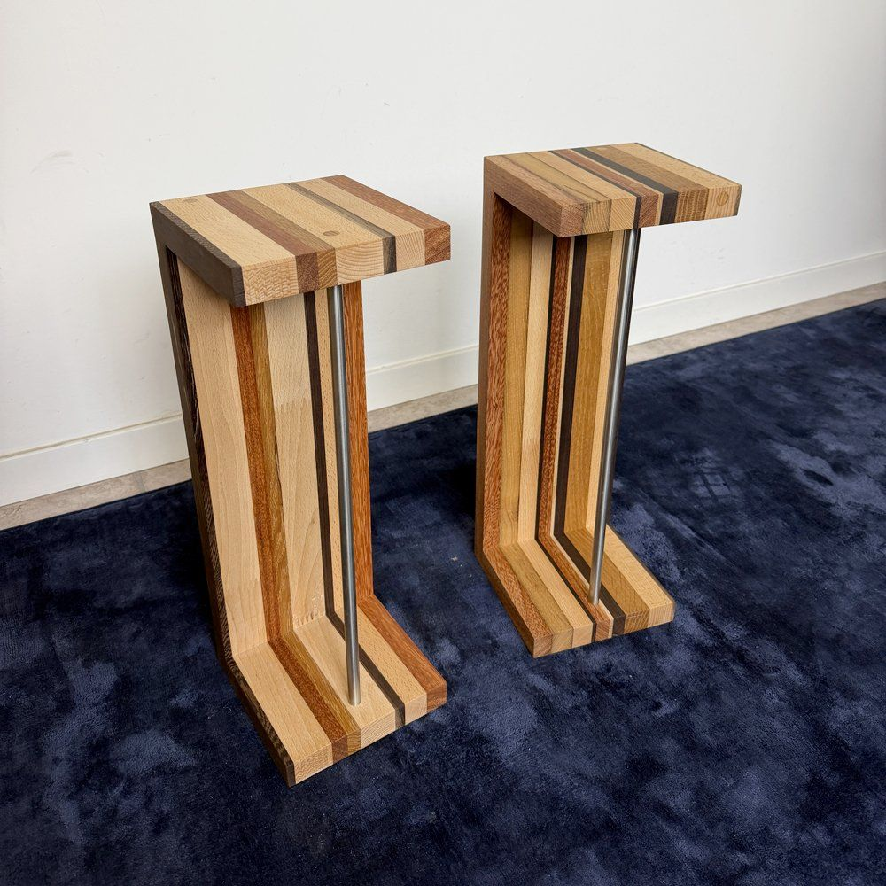
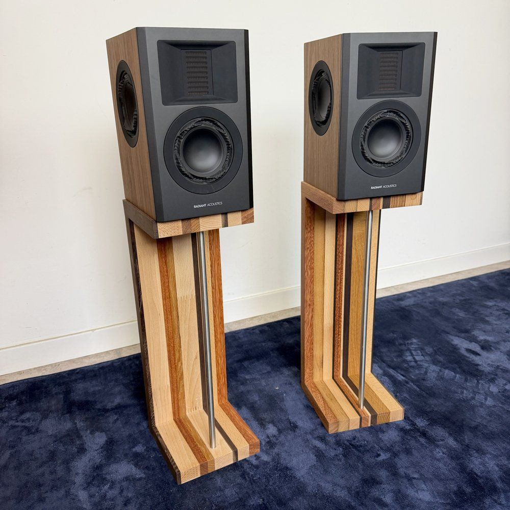
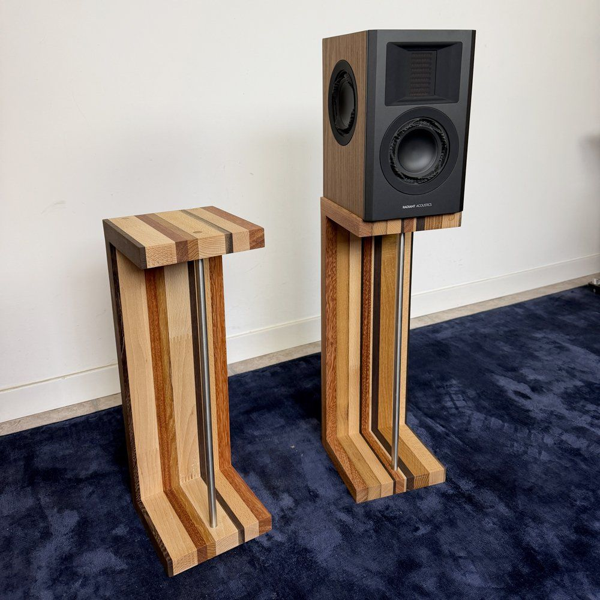
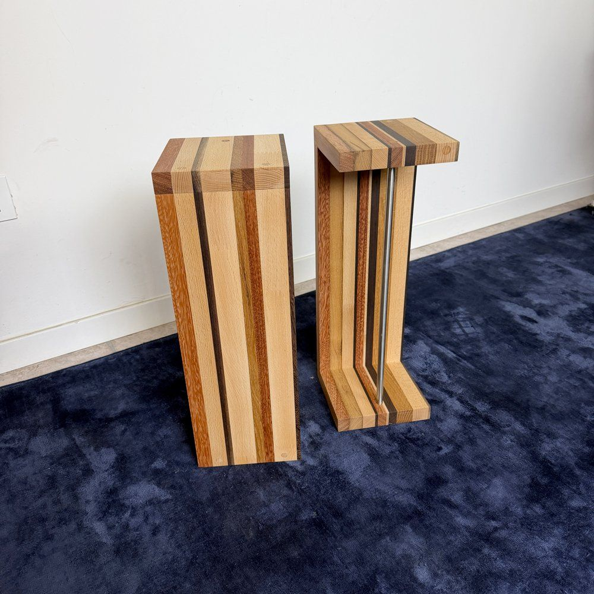
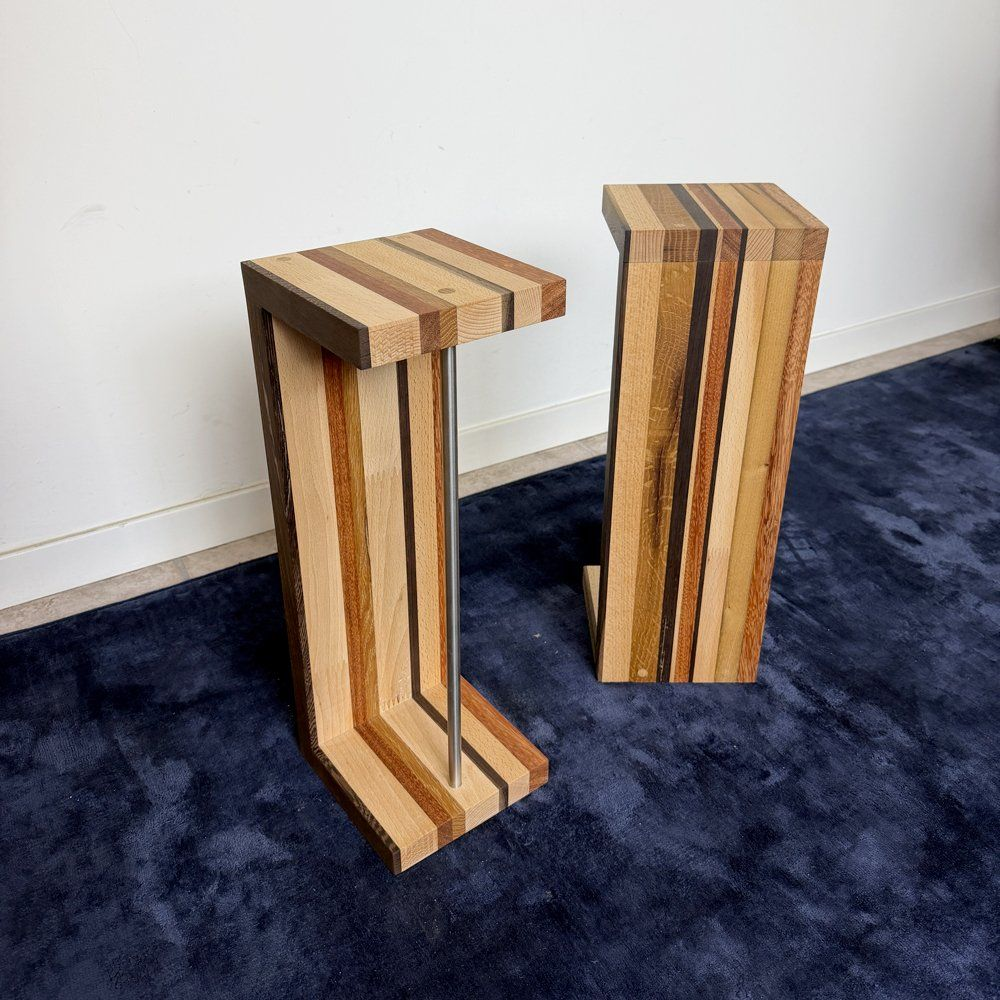

Extrasound Rigatini Solid wood speaker stands
Stands for bookshelf speakers made of strips of different woods set side by side, with a stainless steel tube for stability.
- Mixed woods
- 50.3 cm tall
- Stainless steel tube Ø 12 mm
Woods on requestSee the woods
- Beech
- Oak
- American walnut
- Cherry
- Ash
- Doussié
- Wenge
€250 a pairprices on extrasound.it




Stripes of different woods.
Each stand is a single Z-shaped profile in solid wood, made by joining strips of different woods: that's why every pair has its own stripes. A 12 mm stainless steel tube stiffens the structure.
You'll find it in our showroom in Cesena. Fabrizio also builds it new, to the size of your equipment and your home.
Speakers that fit, for example: Argon Audio Forus 4, Radiant Acoustics Clarity 4.2 and Polk Audio Monitor XT15. These are just examples from the range at Extrasound: any bookshelf speaker with a similar footprint will do.